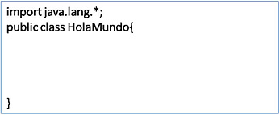
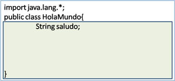
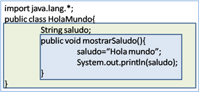
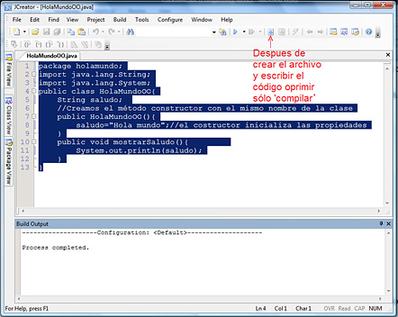
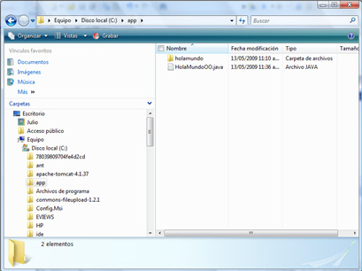
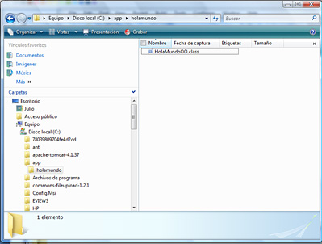

Curso de Java
Desde cero hasta conexiones con bases de datos MySQL
Curso de Java: Contenido
Iniciación: página 13
[ 10, 11, 12, 13, 14, 15, 16 ]
Iniciación al lenguaje Java
Sintaxis
Para comprender mejor la sintaxis del programa debemos pensar en términos de ámbito o alcance. Primero hay que saber que los comentarios están fuera del programa, no están dentro de su ámbito, el compilador no los interpreta, son señales que el programador usa para facilitar la comprensión del código.
El ámbito más externo es donde importamos los recursos que se requerirán para el programa y donde declaramos el programa mismo. Aquí está el principio de todo. En Java siempre desarrollaremos clases, y siempre usaremos clases ya hechas que importaremos. Los recursos mínimos para programar están en el paquete lang de la librería java que el compilador importa por omisión, aunque aquí (ya lo decíamos en un comentario de la clase HolaMundoOO) lo haremos explícitamente por razones didácticas.
Así que al comenzar a desarrollar un programa debemos primero determinar las clases externas necesarias para ayudar a la clase que crearemos nosotros, y después crear ésta. Para la primera labor usamos la palabra reservada import y todas las clases invocadas así podrán ser utilizadas en cualquier lugar del bloque de código de la clase; para la segunda, empleamos las palabras reservadas public class seguidas del nombre que deseemos asignarle; debe ser único, preferentemente un sustantivo, iniciar con mayúscula y expresar claramente su función porque será el identificador de la clase; después van dos llaves que contendrán el bloque de código, como muestra la figura siguiente.

El rectángulo representa el ámbito o alcance. Los objetos del paquete lang están disponibles en todos lados.
Dentro del bloque de la clase está el lugar donde deben crearse las propiedades o atributos y declararse los métodos. Las propiedades deben escribirse primero, fuera de cualquier método y su alcance será toda la clase, que es lo que significa el rectángulo interno en la siguiente figura.

Aquí hace falta hablar de la sintaxis de la creación e inicialización de las variables. En Java, toda variable se crea estableciendo su tipo seguido de un nombre, que deberá ser único en el ámbito donde se le declara; se inicializan siempre con una expresión. Crear significa asignarles un espacio en memoria, mientas que inicializar es darles un valor:
String saludo; → Crea una variable llamada saludo.
saludo= “Hola mundo”; → La inicializa
Cuando las variables son atributos deben crearse únicamente y debe hacerse fuera de los métodos; por otro lado, serán inicializadas dentro de alguno de ellos en el que convenga. Es posible hacer ambas labores en una sola línea pero será sólo aquéllas que sirven a las tareas de los métodos:
String muestra= “Esto es una muestra”;
Los métodos, por su parte, se declaran estableciendo primero el nivel de acceso. En este caso mostrarSaludo() tiene acceso público (para eso usamos la palabra reservada public), que significa que cualquier objeto externo puede invocar la tarea encapsulada en el método. Hay otras posibilidades, por ejemplo prívate, que es también una palabra reservada, y que significa que el método sólo puede ser usado al interior de la clase en la que es declarado. Después del nivel de acceso, está el tipo de datos que el método devuelve; mostrarSaludo() no regresa ningún valor; para indicar esto se usa otra palabra reservada: void, que, como veremos después, podrá ser sustituida por cualquier tipo de datos. Todos los métodos deben tener su propio bloque de código, en el que, como ya dijimos, está encapsulada su tarea. El método en cuestión inicializa saludo, e invoca la clase System (que importamos del paquete lang al principio) cuyo atributo out es un objeto que tiene el método println(cadena) cuya tarea es imprimir una línea con el texto que recibe como parámetro en la salida estándar del sistema. El método mostrarSaludo() y su alcance están representados en el rectángulo más interno de la siguiente figura.

En cuanto a la sintaxis, falta decir que otra de las responsabilidades de cualquier clase es autoconstruirse por lo que tendrá un método que se llamará igual que la clase misma, deberá ser público, no tiene modificador del tipo que devuelve y lo llamamos el constructor, con lo anterior la clase queda como sigue (obsérvese que en este método se inicializa el atributo):
import java.lang.*;
public class HolaMundoOO{
String saludo; //La clase Sring la importamos de java.lang
//Creamos el método constructor con el mismo nombre de la clase
public HolaMundoOO(){
saludo="Hola mundo";//En el constructor se inicializan las propiedades
}
public void mostrarSaludo(){
System.out.println(saludo);//La clase System la importamos de java.lang
}
}
Finalmente, otro mecanismo de encapsulamiento es crear paquetes para guardar en ellos las clases que hacen labores afines. Esto se logra con la palabra reservada package seguida del nombre que identificará al paquete; éstos se escriben sólo con minúsculas. La versión final de la clase HolaMundoOO que queda encapsulada en el paquete holamundo, que importa de java.lang las clases String y System, que tiene el atributo saludo de tipo String, que se autoconstruye e inicializa la propiedad, que tiene un método que muestra saludo usando la clase System queda así (Atiéndanse los comentarios):
package holamundo;//Los paquetes son subdirectorios
import java.lang.String;
import java.lang.System;
public class HolaMundoOO{
String saludo;
//Creamos el método constructor con el mismo nombre de la clase
public HolaMundoOO(){
saludo="Hola mundo";//el constructor inicializa las propiedades
}
public void mostrarSaludo(){
System.out.println(saludo);
}
}
Si aplicamos al programa anterior los mismos pasos del apartado de instalación para probar JCreator, excepto el de ejecución; es decir, crear un nuevo documento vacío con el mismo nombre de la clase, copiar el código anterior y oprimir el botón de compilación debemos obtener algo parecido a esto:

El efecto de compilar es que se crea un archivo .java y el paquete es un subdirectorio:

Dentro del paquete queda el archivo .class, que es el que la máquina virtual puede interpretar:
